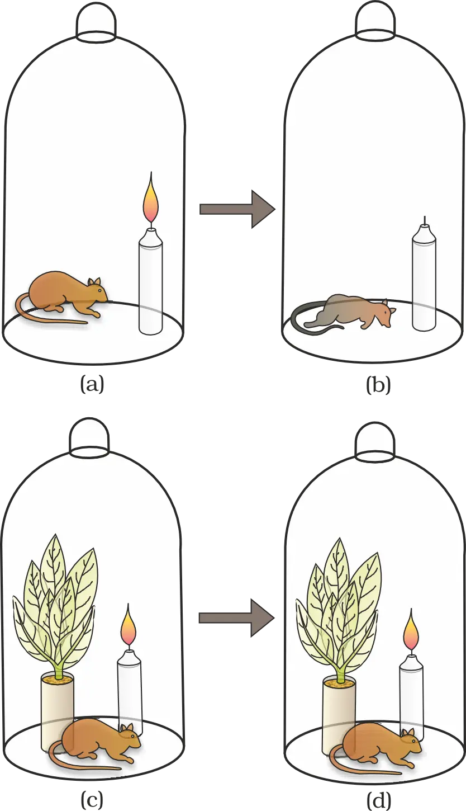
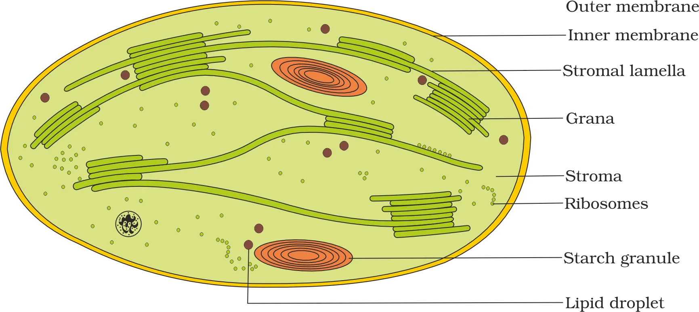
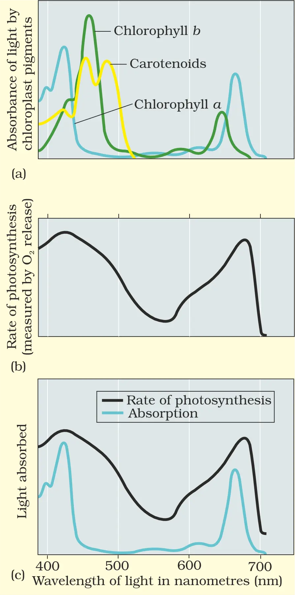
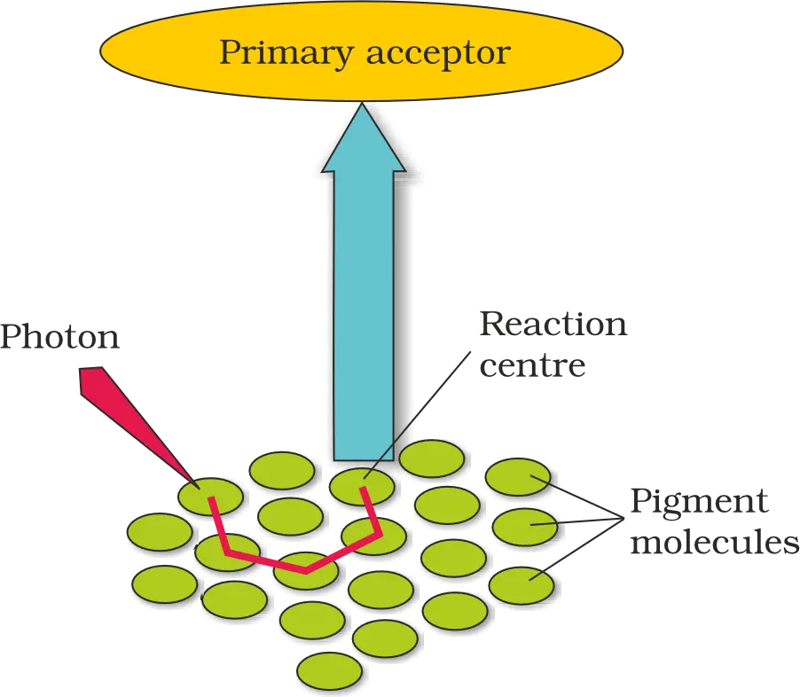
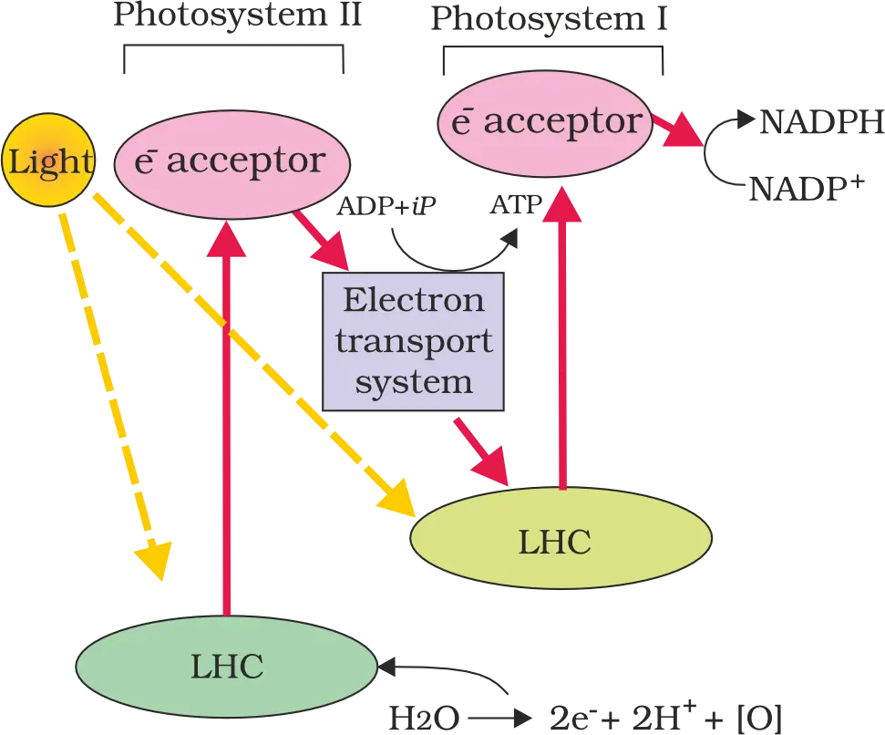
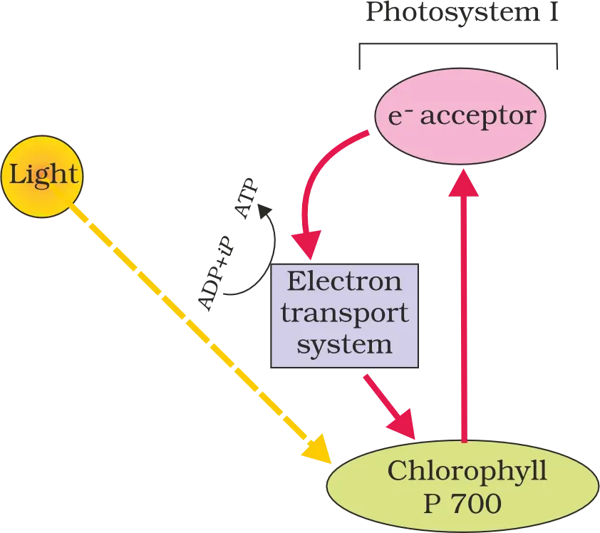
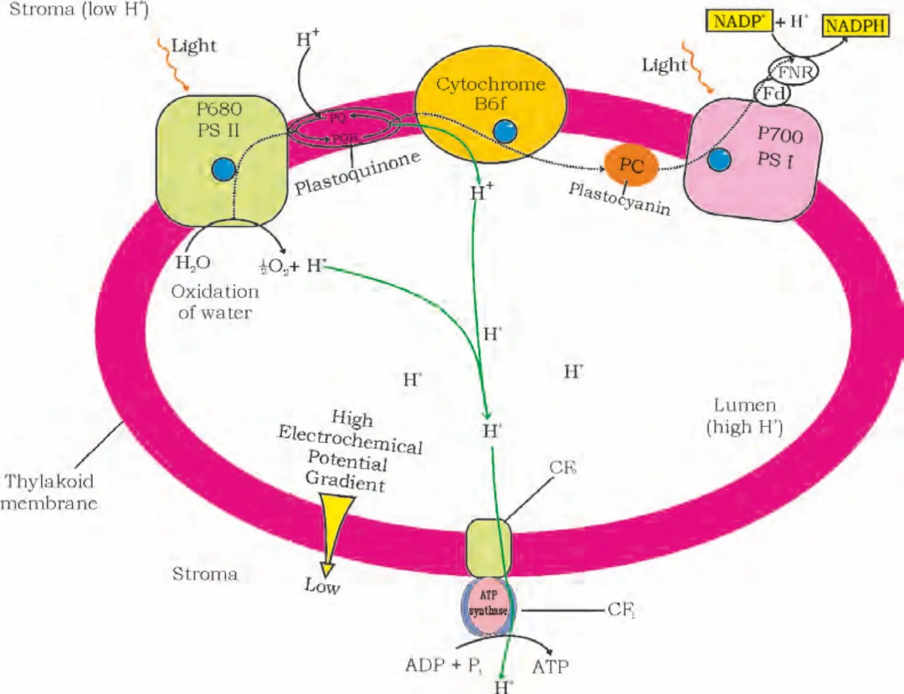
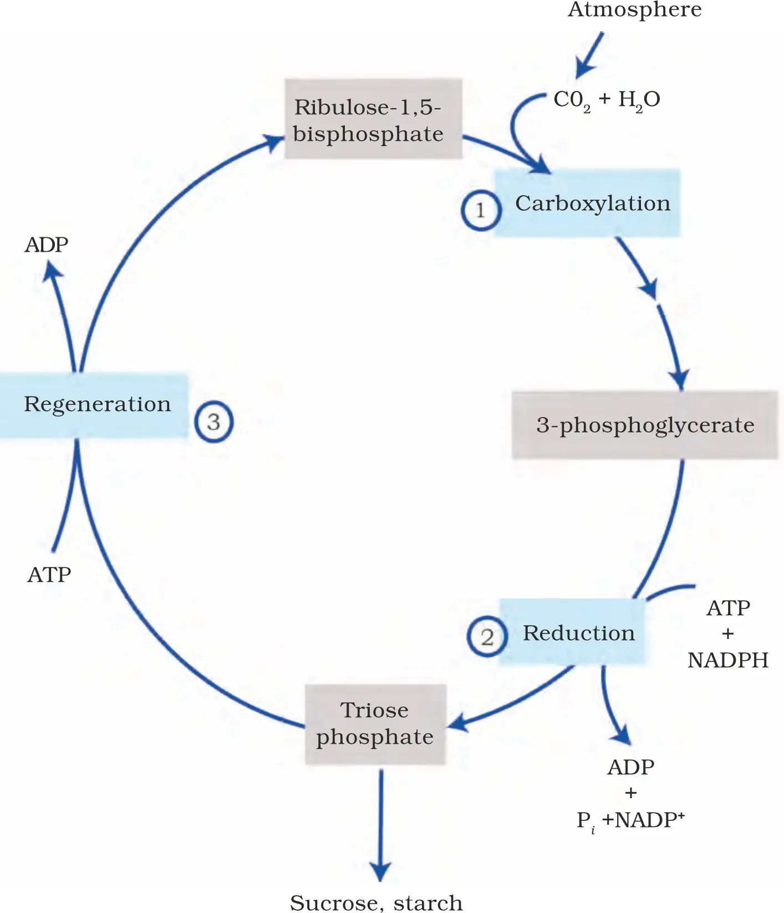
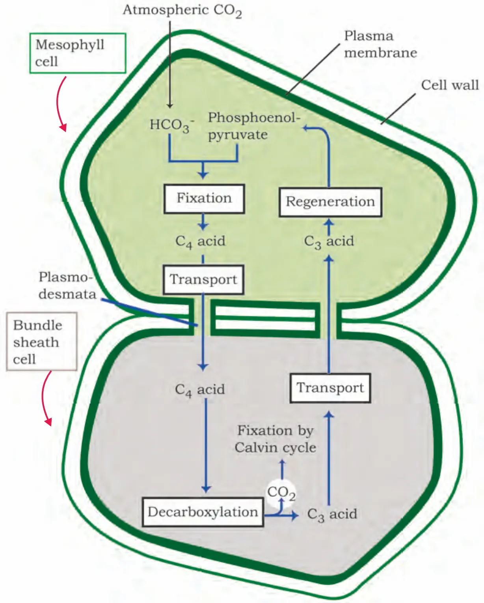
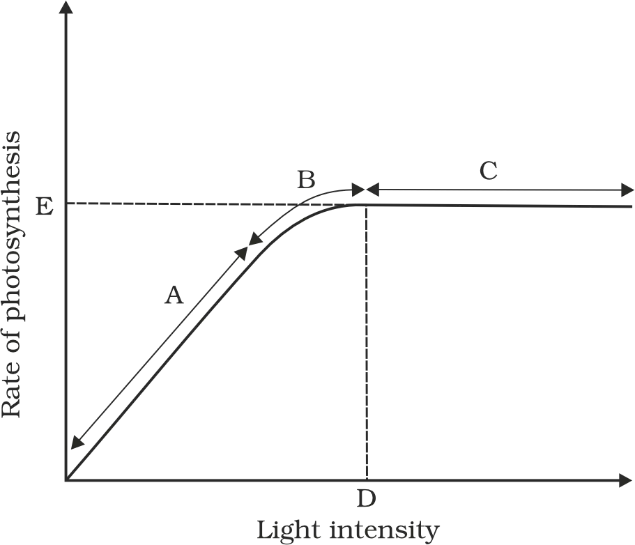

Ch-11 : Photosynthesis in Higher Plants
Unit 4: Plant Physiology (Overview)
Organismic & above levelFocuses on whole organisms, populations, communities, ecosystems
Cellular & molecular levelFocuses on cells, organelles, molecules, reactions
Think “zoom lens biology”: zoom out = organism/ecosystem patterns; zoom in = molecules + reactions.
Ecology & related disciplinesFrom organismic/above-organism level descriptions
Physiology & biochemistryFrom cellular/molecular level descriptions
Chapter 11Photosynthesis in Higher Plants
Chapter 12Respiration in Plants
Chapter 13Plant Growth and Development
Melvin Calvin and the Pathway of Carbon Assimilation
14C-labelled CO2
→
Track where the label appears
→
Identify intermediates
→
Map carbon assimilation pathway
Chapter 11: Photosynthesis in Higher Plants (Introduction)
AutotrophsOrganisms (green plants) that synthesise their own food
HeterotrophsOrganisms that depend on green plants for food
- Primary source of all food on Earth (foundation of food chains)
- Responsible for release of oxygen into the atmosphere by green plants
Quick link: Food chains begin with plant sugars + O2 makes aerobic life possible.
Chapter 11 Roadmap (Section Headings)
11.1What do we Know?
11.2Early Experiments
11.3Where does Photosynthesis take place?
11.4How many Pigments are involved in Photosynthesis?
11.5What is Light Reaction?
11.6The Electron Transport
11.7Where are the ATP and NADPH Used?
11.8The C4 Pathway
11.9Photorespiration
11.10Factors affecting Photosynthesis
11.1 What Do We Know? (Prior Knowledge + Simple Evidence)
Experiment 1: Variegated leaf / Partially covered leaf (Evidence for chlorophyll + light requirement)
- Use a variegated leaf (green and non-green areas), or cover part of a leaf with black paper to block light.
- Expose to light for some time.
- Test the leaf for starch (product stored after photosynthesis).
Leaf with green &/or uncovered parts
→
Expose to light
→
Test for starch
→
Starch only where green + light present
- Chlorophyll is necessary (non-green areas do not form starch)
- Light is necessary (covered regions do not form starch)
Experiment 2: KOH in test tube (Evidence for CO2 requirement)
- Enclose one part of a leaf in a test tube containing KOH-soaked cotton.
- The other half remains exposed to normal air.
- Place the setup in light for some time.
- Test both parts later for starch.
11.2 Early Experiments (Development of Understanding)
core definition: Understanding of photosynthesis developed gradually through simple experiments, especially those showing the role of air, sunlight, and green parts of plants.
Airsomething in air is changed by burning/breathing & “restored” by plants
Sunlightneeded for the air “purification” process
Green partssite of oxygen release (chlorophyll-containing)
Joseph Priestley (1733–1804): Essential role of air; plants “restore” air
1770Performed experiments showing the essential role of air in growth of green plants
Observation 1Candle burning in a closed bell jar soon goes out
Observation 2Mouse kept in a closed space soon suffocates
Closed bell jar
→
Candle burns / mouse breathes
→
Air becomes “damaged”
- Key observation: If a mint plant is placed in the same bell jar, the mouse stays alive and the candle continues to burn.
- Historical fact: Priestley discovered oxygen in 1774 (noted later, but relevant to interpreting his observations).

Jan Ingenhousz (1730–1799): Sunlight is essential; oxygen comes from green parts
Priestley-type setup
→
Keep in dark
→
No purification effect
Priestley-type setup
→
Keep in sunlight
→
Purification occurs
- With an aquatic plant, in bright sunlight, small bubbles form around the green parts.
- In the dark, bubbles are not formed.
- Later, these bubbles were identified as oxygen.
- Oxygen is released during the process in light
- Only green parts of plants (chlorophyll-containing) release oxygen
Historical milestones & overall concept of photosynthesis
Julius von Sachs (c. 1854): evidence for glucose formation and storage
Sachs provided evidence that when plants grow they produce glucose, and that glucose is usually stored as starch.
He also showed that the green substance (chlorophyll) is located in special bodies inside plant cells (later named chloroplasts), and that green parts of plants are the site of glucose formation.
T.W. Engelmann: action spectrum and link to chlorophyll absorption
Engelmann illuminated a green alga (Cladophora) with different colours of light and used aerobic bacteria to detect where O2 was produced (because these bacteria gather where oxygen is highest).
White light
→
Prism splits into spectrum
→
Different wavelengths fall on alga
→
Bacteria accumulate where O2 evolves most
- Observation: Bacteria accumulated mainly in blue and red regions.
- Inference: Maximum photosynthesis (O2 evolution) occurs under blue and red light.
- Outcome: This produced an early action spectrum of photosynthesis, which resembles the absorption spectra of chlorophyll a and chlorophyll b.
Absorption spectrum = wavelengths a pigment absorbs strongly. Action spectrum = wavelengths most effective in driving photosynthesis (measured via O2 evolution/CO2 fixation). They are related but not perfectly identical.
Key features known by mid-19th century
- Plants use light energy.
- They make carbohydrates from CO2 and H2O.
- In oxygen-evolving organisms, O2 is released.
Empirical equation (general carbohydrate unit)
CO2 + H2O ⟶ [CH2O] + O2 (in presence of Light)
[CH2O] denotes a generic carbohydrate unit (e.g., represents carbohydrate composition; glucose is a six-carbon sugar built from such units).
Cornelius van Niel: generalized photosynthesis and source of oxygen
Van Niel (based on studies of purple and green bacteria) proposed that photosynthesis is essentially a light-dependent redox process: hydrogen from a suitable oxidisable compound reduces CO2 to carbohydrate.
CO2 + 2H2A ⟶ [CH2O] + H2O + 2A (in presence of Light)
- H2A = hydrogen donor (electron donor).
- A = oxidised product after donation of hydrogen/electrons.
Green plantsH2O donor; oxidation product = O2
Purple/green sulphur bacteriaH2S donor; oxidation product = sulphur/sulphate (not O2)
Key inferenceO2 in plants comes from H2O, not CO2
Van Niel’s inference that oxygen evolved by green plants comes from water (not CO2) was later confirmed using radioisotopic techniques.
Overall balanced equation for photosynthesis (glucose as product)
6CO2 + 12H2O ⟶ C6H12O6 + 6H2O + 6O2 (in presence of Light)
- This equation emphasises: (i) glucose (C6H12O6) is formed,
- (ii) O2 released originates from H2O (proved by radioisotopes), and
- (iii) photosynthesis is multistep, not a single reaction.
Exam trap: Do not state “oxygen comes from CO2”. Correct: oxygen released comes from water.
Analogy: Think of H2O as the “electron wallet” that pays electrons to reduce CO2 into sugar; the “spent” remainder becomes O2.
Where does photosynthesis take place?
Sites in the plant
Photosynthesis occurs in green leaves and also in other green parts of the plant (i.e., any chlorophyll-containing tissues).

Leaf mesophyll cells contain a large number of chloroplasts. Chloroplasts often align along mesophyll cell walls so as to receive an optimum quantity of incident light.
The text highlights that chloroplast orientation can change with light conditions: sometimes their flat surfaces align parallel to the wall, sometimes they become perpendicular to incident light—interpret this as a light-optimising/photoprotective adjustment conceptually.
Chloroplast structure relevant to photosynthesis (division of labour)
Within a chloroplast is a membranous system and a fluid matrix, showing a clear division of labour between light capture/energy conversion and sugar synthesis.
GranaStacks/regions of thylakoid membranes (part of membranous system)
Stroma lamellaeMembrane connections between grana
StromaMatrix where enzymatic sugar-synthesis reactions occur
- Membrane system (grana + lamellae): traps light energy; synthesises ATP and NADPH.
- Stroma: enzymatic reactions synthesise sugar, which can form starch.
Light reactions vs dark reactions (carbon reactions)
Common misconception: “Dark reactions happen only in darkness.” Incorrect. They are called “dark” only because they are not directly light-driven; they remain functionally light-dependent via ATP and NADPH.
How many types of pigments are involved in photosynthesis?
Why leaves show many shades of green: multiple pigments
Chlorophyll aBright/blue-green band in chromatogram
Chlorophyll bYellow-green band
XanthophyllsYellow band
CarotenoidsYellow to yellow-orange band
What pigments do: wavelength-specific absorption
Absorption spectrum vs action spectrum (Figures 11.3a–c)
Action spectrum (Fig. 11.3b): shows the effectiveness of different wavelengths in driving photosynthesis (rate vs wavelength).
Superimposed spectra (Fig. 11.3c): compares action spectrum with chlorophyll a absorption to test overlap.

- Chlorophyll a shows maximum absorption in the blue and red regions of visible light (VIBGYOR context).
- Maximum photosynthesis also occurs in the blue and red regions (action spectrum peak aligns broadly with chlorophyll a absorption peaks).
- This supports: chlorophyll a is the chief photosynthetic pigment.
- However, there is not a complete one-to-one overlap between chlorophyll a absorption and the action spectrum, implying the involvement of other pigments in harvesting light and transferring energy.
Accessory Pigments & Action Spectrum Link
- Absorb light and transfer absorbed energy to chlorophyll a
- Broaden the usable wavelength range of incoming light (increase photosynthetic efficiency)
- Protect chlorophyll a from photo-oxidation
11.5 What is Light Reaction (Photochemical Phase)?
- Light absorption
- Water splitting (photolysis)
- Oxygen release
- Formation of high-energy intermediates: ATP and NADPH
Photosystems and Light Harvesting Complex (LHC)
Photosystem II (PS II)Discovered second? No—named by discovery sequence; functions first in Z-scheme
Photosystem I (PS I)Discovered first; functions after PS II in non-cyclic flow

P700PS I reaction centre; absorption peak at 700 nm
P680PS II reaction centre; absorption maxima at 680 nm

Electron flow from PS II to PS I to NADP+
Z-scheme (why it is called so)
PS II (P680) excited e−
→
ETS (cytochromes; downhill)
→
PS I (P700) excited e−
→
NADP+ reduced to NADPH + H+
11.6.1 Splitting of Water (Photolysis)
PS II loses e⁻ to ETS
→
Needs e⁻ replacement
→
Photolysis provides e⁻
PS I loses e⁻
→
Replaced by PS II (via ETS)
PS II loses e⁻
→
Replenished by water splitting
- This is resolved in chemiosmosis: proton accumulation is in the lumen.
11.6.2 Cyclic and Non-cyclic Photophosphorylation
ATP = the “charged battery” of the cell (energy stored in bonds, ready to be used).
Non-cyclic photophosphorylation
PS II
→
ETS
→
PS I
Cyclic photophosphorylation
PS I excites e⁻
→
ETS
→
e⁻ returns to PS I
- Produces ATP only
- Does NOT produce NADPH + H+

Grana lamellaeHave both PS I and PS II
Stroma lamellaeLack PS II and also lack NADP reductase enzyme
11.6.3 Chemiosmotic Hypothesis (ATP Synthesis in Chloroplast)
- Photosynthesis: proton accumulation is towards the inside of thylakoid membrane = lumen
- Respiration: protons accumulate in the intermembrane space when electrons move through the ETS
How the proton gradient is generated (three causes)
- Water splitting on inner side: Photolysis occurs on the inner side of thylakoid membrane → H+ produced accumulates in the lumen.
- Proton translocation coupled to electron transport: As electrons move, protons are transported across the membrane because the primary electron acceptor (towards outer side) passes the electron to an H carrier (not directly to an electron carrier). This H carrier:
- removes a proton from stroma while carrying an electron
- releases the proton into the lumen when it transfers the electron to an electron carrier on the inner side
- NADP+ reduction consumes stromal protons: NADP reductase is located on the stroma side. Reduction of NADP+ to NADPH + H+ requires protons, which are removed from the stroma.
- Stroma: protons decrease
- Lumen: protons accumulate
- Forms a proton gradient across thylakoid membrane + causes a measurable decrease in lumen pH

How the gradient drives ATP synthesis
H⁺ builds up in lumen
→
H⁺ flows through membrane channel
→
ATP synthesis in stroma
Chemiosmosis & ATP Synthase (in chloroplast thylakoids)
Structure of ATP synthase: CF0 and CF1
CF0Embedded in thylakoid membrane; forms a transmembrane channel for H+ movement (facilitated diffusion)
CF1Protrudes on the outer surface of thylakoid membrane facing the stroma; catalytic head where ATP is formed
H+ move back via CF0
→
Proton gradient breaks down
→
Energy released
→
CF1 conformational change
→
ATP synthesis (multiple ATP)
What chemiosmosis requires (chloroplast context)
- Membrane: thylakoid membrane (separates stroma from thylakoid lumen).
- Proton pump: uses energy to pump H+ across the membrane.
- Proton gradient: high concentration of protons in the thylakoid lumen.
- ATP synthase: provides a channel for H+ diffusion back across membrane; energy released activates ATP synthase to catalyse ATP formation.
Where are ATP and NADPH used? (Biosynthetic phase / “dark reaction” issue)
- O2 diffuses out of the chloroplast.
- ATP and NADPH are used to drive the biosynthetic phase that produces sugars (food).
- ATP (from light reaction)
- NADPH (from light reaction)
- CO2 and H2O
Discovery of first CO2-fixation product & pathway types (C3 vs C4)
Calvin’s 14C experiments and the Calvin cycle
Two main types of CO2 assimilation: C3 and C4 pathways
C3 pathwayFirst stable CO2-fixation product is a C3 acid: 3-PGA (PGA)
C4 pathwayFirst stable CO2-fixation product is a C4 acid: oxaloacetic acid (OAA)
The Primary Acceptor of CO2 (Calvin cycle)
The Calvin Cycle (occurrence and stages)

Three stages of the Calvin cycle
1. Carboxylation
→
2. Reduction
→
3. Regeneration
1) Carboxylation
CO2 + RuBP
→
(RuBP carboxylase)
→
2 × 3-PGA
2) Reduction
- 2 ATP for phosphorylation
- 2 NADPH for reduction
3) Regeneration
Calvin Cycle: Energy Requirement & Overall Balance
For every 1 CO2 fixed, the Calvin cycle requires 3 ATP and 2 NADPH.
Cyclic phosphorylation is believed to occur to compensate for the ATP:NADPH demand mismatch between the light reactions and the Calvin cycle (dark reaction).
➡ The Calvin cycle needs proportionately more ATP than NADPH.
- 1 glucose requires 6 turns of the Calvin cycle (= fixation of 6 CO2)
NADPH required = 6 × 2 = 12 NADPH
The text explicitly states: 6 turns → 1 glucose.
IN: 6 CO2 + 18 ATP + 12 NADPH
→
OUT: 1 glucose + 18 ADP + 12 NADP
- Interpretation: CO2 is reduced to carbohydrate using energy (ATP) and reducing power (NADPH); ATP becomes ADP and NADPH becomes NADP.
The C4 Pathway (Hatch and Slack Pathway)
C4 plants form a 4-carbon compound (oxaloacetic acid, OAA) as the first CO2-fixation product, but they still use the C3 pathway (Calvin cycle) as the main biosynthetic pathway for sugar formation.
How C4 plants differ from C3 plants (features)
Special leaf anatomy“Kranz” anatomy with prominent bundle sheath
Higher temperature toleranceperform well at higher temperatures
High-light responseshow response to high light intensities
No photorespirationphotorespiration absent due to CO2 concentrating mechanism
Greater biomass productivityhigher yields/productivity
Kranz anatomy (bundle sheath specialisation)
- Bundle sheath may form several layers around vascular bundles.
- Cells have a large number of chloroplasts.
- They have thick walls impervious to gaseous exchange.
- No intercellular spaces (helps limit gas diffusion/leakage).
Cut a vertical section of a leaf and look for a prominent bundle sheath “wreath” around vascular bundles → helps identify many C4 plants (e.g., maize, sorghum).
Exam focus = the distinctive structure and role in C4 photosynthesis.
Steps of the Hatch and Slack Pathway (C4 cycle)

1. Mesophyll: CO2 acceptor = PEP (3C)
→
2. Mesophyll: PEPcase fixes CO2 → OAA (4C)
3. Mesophyll: OAA → malate/aspartate (4C)
→
4. Transport to bundle sheath
5. Bundle sheath: C4 acids decarboxylated → CO2 + 3C
→
6. CO2 enters Calvin cycle (in bundle sheath)
7. 3C returns to mesophyll
→
8. Regeneration: 3C → PEP (cycle completes)
- Primary CO2 acceptor (C4): Phosphoenol pyruvate (PEP), a 3-carbon compound, present in mesophyll cells.
- Enzyme for initial fixation (C4): PEP carboxylase (PEPcase).
- Mesophyll cells in C4 plants lack RuBisCO (important distinguishing point).
- Bundle sheath cells: rich in RuBisCO, but lack PEPcase.
- C3 plants: Calvin cycle occurs in all mesophyll cells.
- C4 plants: Calvin cycle occurs only in bundle sheath cells (not in mesophyll).
Photorespiration
First step of Calvin cycle (carboxylation by RuBisCO)
- Competitive binding: CO2 and O2 compete for RuBisCO active site.
- Affinity note from text: RuBisCO has a much greater affinity for CO2 when the CO2:O2 is nearly equal.
- Key determinant: relative concentration of CO2 vs O2 decides which binds.
What is photorespiration and what does it produce?
O2 binds RuBisCO (in C3)
→
Less CO2 fixation
→
RuBP + O2
→
Phosphoglycerate + Phosphoglycolate (2C)
- Consequence: CO2 fixation decreases because RuBP is diverted away from making 2 × 3PGA.
- Products when O2 binds: Phosphoglycerate + Phosphoglycolate (2C).
- In photorespiration there is no synthesis of sugars.
- There is no synthesis of ATP.
- There is no synthesis of NADPH.
- It results in release of CO2 with utilisation of ATP (energy loss).
- Biological function of photorespiration is not known yet (as per text).
Why photorespiration is absent in C4 plants
C4 acids move to bundle sheath
→
Decarboxylation releases CO2
→
High intracellular CO2 near RuBisCO
→
RuBisCO mostly carboxylase (oxygenase minimized)
Comparison of C3 and C4 Plants (Table 11.1: examinable contrasts)
Site of Calvin cycle and initial carboxylation
Calvin cycle cell typeC3 = mesophyll • C4 = bundle sheath
Initial carboxylation cell typeC3 = mesophyll • C4 = mesophyll (via PEPcase)
How many cell types fix CO2?C3 = one: mesophyll • C4 = two: mesophyll + bundle sheath
Primary CO2 acceptor and first fixation product
Primary CO2 acceptorC3 = RuBP • C4 = PEP
Carbons in primary acceptorC3 = 5 (RuBP) • C4 = 3 (PEP)
Primary CO2 fixation productC3 = PGA • C4 = OAA
Carbons in first productC3 = 3 (PGA) • C4 = 4 (OAA)
Enzymes present and their cellular location
RuBisCO present?C3 = Yes • C4 = Yes (rich in bundle sheath)
PEPcase present?C3 = No • C4 = Yes
Which cells have RuBisCO?C3 = mesophyll • C4 = bundle sheath
CO2 fixation rate under high light
High light CO2 fixation rateC3 = low • C4 = high
Photorespiration trends (conditions-based)
Low light intensitiesC3 = high • C4 = negligible
High light intensitiesC3 = high • C4 = negligible
Low CO2 concentrationC3 = high • C4 = negligible
High CO2 concentrationC3 = negligible (high CO2 suppresses oxygenation) • C4 = negligible
Temperature optimum and examples
Temperature optimumC3 = 20–25°C • C4 = 30–40°C
Examples (from text)C4: maize, sorghum (Kranz anatomy observable)
Factors Affecting Photosynthesis
Internal (Plant) Factors
Leavesnumber, size, age, orientation
Mesophyll cellsamount/condition affects capacity for CO₂ fixation
Chloroplastsnumber and functional state
Internal CO₂ concentrationCO₂ available inside leaf for fixation
Chlorophyll amountpigment availability for light absorption
External (Environmental) Factors
Sunlightavailability (quality, intensity, duration)
Temperatureespecially affects enzyme-driven steps
CO₂ concentrationoften the major limiting factor
Watermainly affects stomata/leaf condition
Blackman’s (1905) Law of Limiting Factors
- Illustrative example (given): Even with a green leaf and optimal light and CO₂, photosynthesis may not occur if temperature is very low. Raising temperature to optimal restores photosynthesis → therefore temperature was the limiting factor.
Light as a Factor (11.10.1)

- Light quality (wavelength/colour)
- Light intensity (amount of light)
- Duration of exposure (photoperiod/length of illumination)
Effect of Light Intensity on CO₂ Fixation (Figure 11.10)
- At low light intensity, there is a linear relationship between incident light and CO₂ fixation rate.
- At higher light intensity, the rate plateaus because other factors become limiting.
- Light saturation occurs at about 10% of full sunlight → in nature, light is rarely limiting except in shade or dense forests.
- Beyond an optimum point, very high light can cause breakdown of chlorophyll → decreased photosynthesis.
Carbon Dioxide Concentration (11.10.2)
- Atmospheric CO₂ is only about 0.03–0.04%.
- Increasing CO₂ up to about 0.05% increases CO₂ fixation rate.
- Beyond this, high CO₂ may become damaging over longer periods.
Differential Response of C3 vs C4 Plants to CO₂
- At low light, neither C3 nor C4 shows much response to high CO₂ (because light is limiting).
- At high light, both C3 and C4 show increased photosynthesis with increased CO₂.
- C4 plants reach CO₂ saturation at about 360 µL L⁻¹.
- C3 plants respond to increased CO₂ and saturate only beyond 450 µL L⁻¹.
- Therefore, current CO₂ availability is limiting for C3 plants more than for C4 plants.
Applied Use: CO₂ Enrichment in Greenhouses
- Greenhouse practice: C3 crops such as tomato and bell pepper are grown in CO₂-enriched atmospheres to increase photosynthesis → higher productivity/yields.
Temperature (11.10.3)
- Dark reactions (carbon fixation/Calvin cycle etc.) are enzymatic → strongly temperature-controlled.
- Light reactions are also temperature-sensitive but to a much lesser extent.
- C4 plants respond better to higher temperatures → higher photosynthetic rates at higher temperature.
- C3 plants have a lower temperature optimum.
- Optimum temperature depends on habitat adaptation: tropical plants have a higher temperature optimum than temperate plants.
Temperature change
→Enzyme activity in dark reactions changes
→Overall photosynthetic rate changes
Water (11.10.4)
- Water stress causes stomatal closure → reduced CO₂ entry → reduced CO₂ availability for fixation.
- Water stress causes leaf wilting → reduced leaf surface area and reduced metabolic activity.
Water stress
→Stomata close
→CO₂ availability drops
→Photosynthesis decreases
Chapter Summary (Consolidation of Key Points)
- Photosynthesis enables green plants to make food: CO₂ enters via stomata and is used to form carbohydrates (mainly glucose and starch).
- Occurs in green parts, mainly leaves. Mesophyll cells contain many chloroplasts responsible for CO₂ fixation.
- In chloroplasts: membranes are sites of light reaction; stroma is site of chemosynthetic pathway (carbon-fixing reactions).
- Two stages: Light reaction and carbon-fixing reactions.
Think: Leaves = “solar panels” + “sugar factory” → CO₂ in (stomata), sugar stored as starch.
Light Reaction: Photosystems, Electron Flow, ATP Formation, Photolysis
PS Ireaction centre chlorophyll a = P700 (absorbs 700 nm)
PS IIreaction centre = P680 (absorbs red light at 680 nm)
Light absorbed
→e⁻ excited
→PS II → PS I
→NAD → NADH
- After absorbing light, electrons are excited and transferred through PS II → PS I and finally to NAD forming NADH (as stated in the text summary).
- Electron transport creates a proton gradient across the thylakoid membrane.
- When the gradient breaks down via proton movement through the F0 part of ATPase, energy released drives ATP synthesis.
- Splitting of water is associated with PS II → releases O₂, protons, and provides electrons to PS II.
Electron transport
→Proton gradient (thylakoid membrane)
→H⁺ through F0 (ATPase)
→ATP synthesis
Water splitting @ PS II
→O₂ + H⁺ released
→e⁻ supplied to PS II
Carbon Fixation (Calvin Cycle) and Photorespiration
- CO₂ is added by RuBisCO to RuBP (5-carbon compound) → forms 2 molecules of 3-carbon PGA.
- PGA is converted to sugar through the Calvin cycle, and RuBP is regenerated.
- ATP and NADPH (from light reaction) are utilised in the Calvin cycle.
- RuBisCO also catalyses a wasteful oxygenation reaction in C3 plants → photorespiration.
CO₂ + RuBP (5C)
→RuBisCO
→2 × PGA (3C)
→Sugar + RuBP regenerated
InputsATP + NADPH from light reaction are used
Key enzymeRuBisCO adds CO₂ to RuBP
C3 issueOxygenation → photorespiration (wasteful)
RuBisCO has a “double role”: it can drive useful carboxylation (Calvin cycle) but can also trigger wasteful oxygenation → photorespiration in C3 plants.
C4 Pathway (Special Photosynthesis in Some Tropical Plants)
- In C4 plants, the first product of CO₂ fixation in mesophyll is a 4-carbon compound.
- In bundle sheath cells, the Calvin pathway occurs for carbohydrate synthesis.
Mesophyll: CO₂ fixed
→1st product = 4-carbon compound
→Bundle sheath: Calvin pathway
→Carbohydrate synthesis
Location cue: C4 = “two places” → first fixation in mesophyll, sugar-making Calvin pathway in bundle sheath.